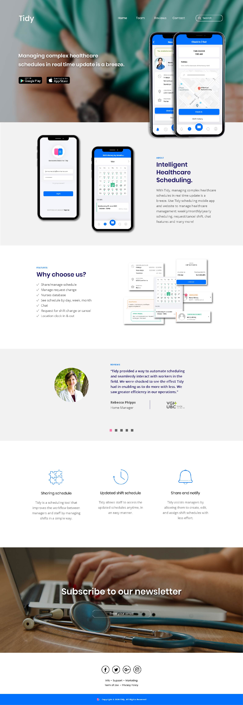
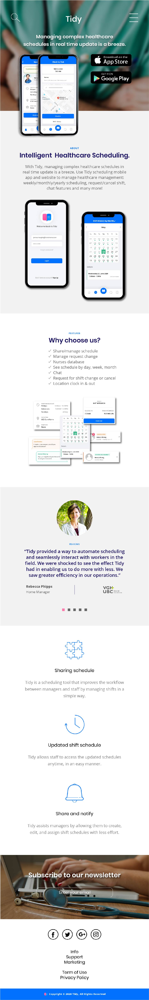

Tidy responsive website: Home Page - Web browser size
Tidy responsive website: Home Page - Mobile size
Tidy Schedule Viewer Mobile App
Tidy is a mobile application that helps essential workers and their manager to manage and share schedules, manage staff requests with live database and intuitive shift viewer, provides live location feature to clock in and clock out and see shift history and live chat between managers and staff.
Tidy Mobile Application features
Manage & share schedule
Manage staff requests
Live database
Intuitive shift viewer
Live location clock in & out
Live chat between staffs
Project Role and Responsibilities as
Web Designer and Q&A
Applied Microsoft Office advanced skills to build documentation related to project management.
Worked as Q&A testing and editing CSS in Cordova mobile template according to mockups and UI Kit.
Developed WordPress theme in PHP to showcase the mobile app applying the good practices in information architecture.
These MVP project images are part of the documentation produced for the class Project I, post-degree diploma in Web & Mobile Design and Development, Langara College, 2020.
Contact me to talk more about this project or you can go back to Home to see my other projects.